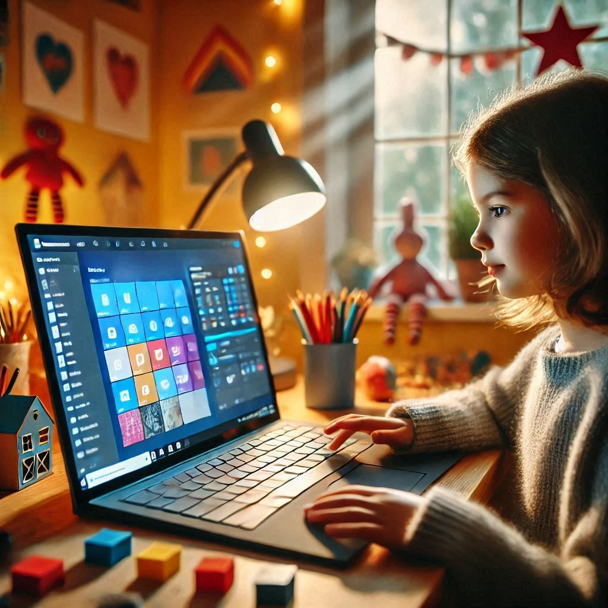

Introduction to Microsoft Designer
Learn the basics of designing fun and colorful graphics with Microsoft Designer.
- What is Microsoft Designer
- What can Microsoft Designer do
- How to use it
- Why is AI important in photography
- Simple design projects to try

What is Microsoft Designer?
Microsoft Designer is a tool that helps you quickly create cool designs for things like social media posts, invitations, and digital cards. It uses artificial intelligence (AI) to make unique designs just for you, based on your ideas or pictures. It even gives tips to make your designs better!
What can Microsoft Designer do?
There are many advantages and tools that Microsoft Designer offers:
- Templates: Ready-made designs you can easily change to suit your needs.
- Design Tools: Add shapes, icons, pictures, or text to make your design perfect.
- Teamwork: Work with friends or teammates on the same design.
How to use it?
Here are some simple steps for using Microsoft Designer:
- Pick a template to start with.
- Change the colors, pictures, and text to match your style.
- Add fun elements like shapes and icons.
- Use AI to help! Just type what you want, and it creates ideas for you. It can also suggest captions or hashtags.
Why is AI important in photography?
AI, like the one used in Microsoft Designer, helps us work faster and be more creative. While humans will always guide the process, AI tools make it easier to bring our ideas to life. Microsoft Designer is a great example of how AI can make designing fun and simple!
Simple design projects to try
Here is a simple tutorial that will help you learn and understand the lesson faster: